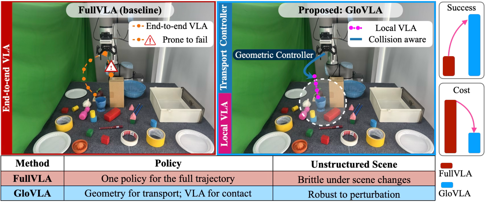
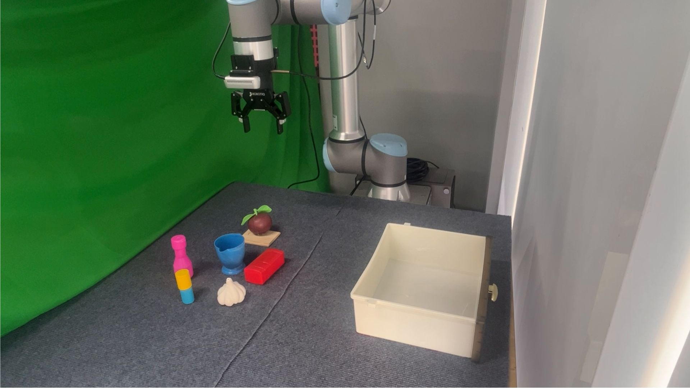
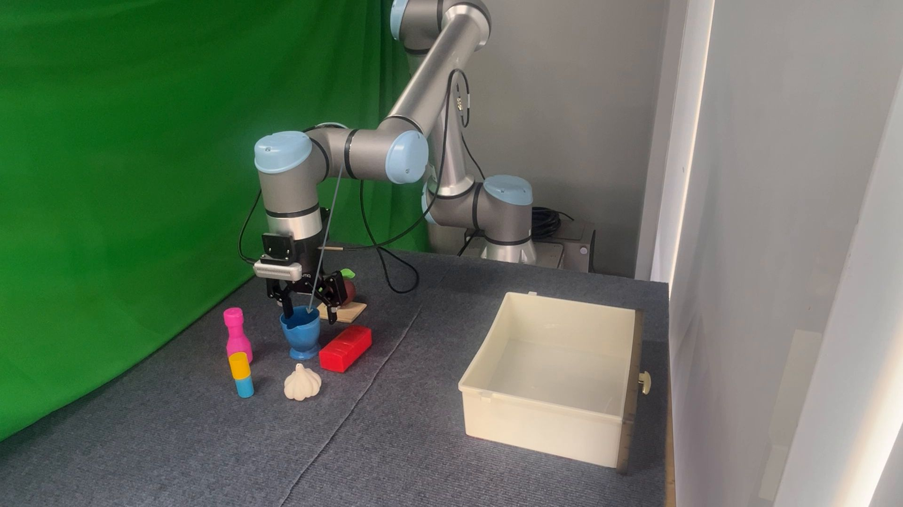
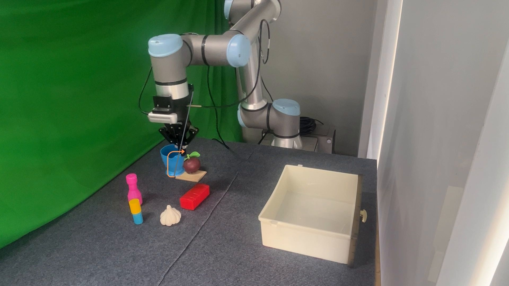
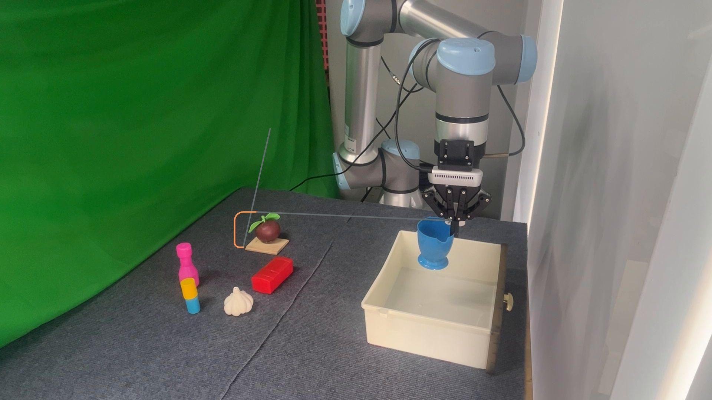
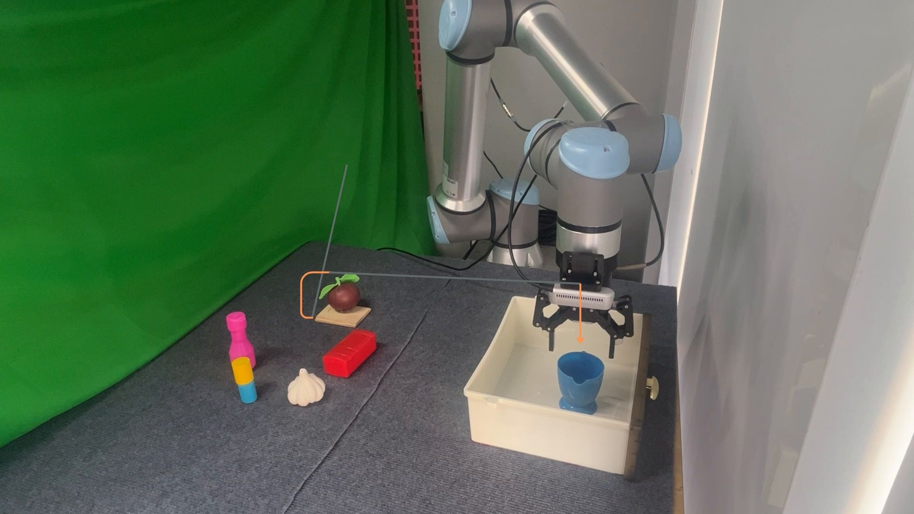
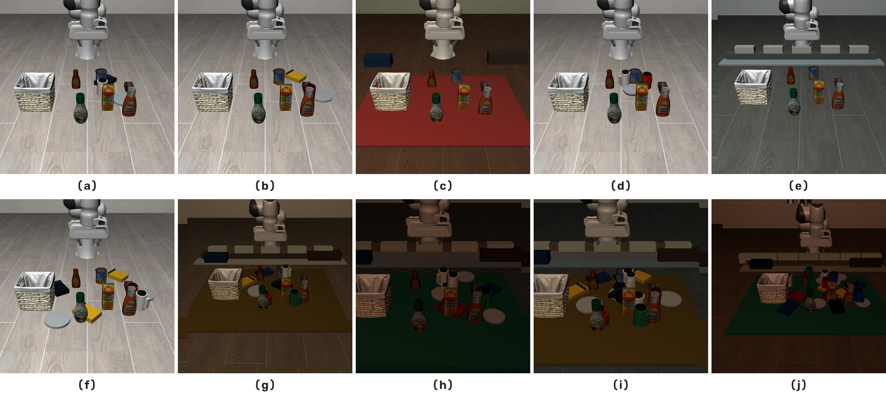

Abstract
Vision-language-action (VLA) models have shown promising generalization for language-conditioned robot manipulation, but deploying them in unstructured environments remains challenging. A single end-to-end VLA policy must simultaneously solve long-range transport of the end effector to task-relevant regions and short-horizon, contact-rich interaction upon arrival. This formulation is inefficient and brittle: small visual shifts, distractors, clutter, occlusions, or unfavorable initial gripper poses can push the policy outside the local state distribution in which it was trained. We introduce GloVLA, a hybrid framework that explicitly separates object-centric manipulation into two complementary regimes: a geometric transport controller moves the end-effector into interaction-centric handoff regions, and local VLA policies handle only the short-horizon interaction phases. GloVLA is model-agnostic and integrates with different VLA backbones with no additional demonstrations and no changes to the action space or success predicate. Experiments on standard LIBERO and LIBERO-Plus Object tasks, a newly introduced LIBERO-Challenge benchmark, and real-world unstructured settings show that GloVLA improves task success and substantially lowers VLA inference cost compared with full end-to-end VLA execution. On LIBERO-Challenge, full-trajectory GR00T N1.6 execution degrades to 20.9% average success while GloVLA retains 88.5%; on a physical UR10e, overall success improves from 35.6% to 90.0% while mean inference time is more than halved.
Method

For each LIBERO Object task, the original demonstrations are split into a grasp-sphere dataset around the target object and a place-sphere dataset around the basket, so the policy sees dense supervision near contact while the transport controller handles global transport. The controller emits the same 7D OSC-pose action format as the policy, and the episode is still judged by the official LIBERO success predicate. At rollout time execution is a four-mode switched state machine:

home Robot at its reset pose; the target object is localized.
transport → object Controller drives the gripper to the object handoff region.
grasp VLA VLA closes the loop to grasp and lift the object.
transport → basket Controller carries the held object to the basket handoff region.
place VLA VLA aligns and releases the object into the basket.No extra data
Local policies train on the same demonstrations as the full-trajectory baseline — gains cannot come from extra supervision.
Same task definition
Action space, observations, and the official success predicate are unchanged — the task is not made easier.
Deterministic handoff
The controller–policy boundary is fixed object-centric offsets, not a learned component — it adds no new failure surface.
Backbone-agnostic
Any VLA that can be trained on the full task can be trained on the local phases instead.
Stardard LIBERO Object Results
Even on the clean benchmark, where FullVLA is already strong, the factorization improves average success for every one of the four backbones — and reduces episode-to-episode variance (e.g. GR00T N1.6’s standard deviation drops from 6.0 to 1.9 points).
Full per-task table (Table I)
| LIBERO Object Task | π0 | π0.5 | GR00T N1.6 | GR00T N1.7 | ||||
|---|---|---|---|---|---|---|---|---|
| Full | Hybrid | Full | Hybrid | Full | Hybrid | Full | Hybrid | |
| Alphabet Soup | 94.0±12.0 | 100.0±0.0 | 100.0±0.0 | 100.0±0.0 | 100.0±0.0 | 100.0±0.0 | 98.0±4.5 | 100.0±0.0 |
| BBQ Sauce | 82.0±4.5 | 90.0±0.0 | 100.0±0.0 | 100.0±0.0 | 60.0±15.8 | 90.0±8.9 | 94.0±5.5 | 98.0±4.5 |
| Butter | 84.0±11.4 | 100.0±0.0 | 96.0±5.5 | 100.0±0.0 | 100.0±0.0 | 100.0±0.0 | 98.0±4.5 | 100.0±0.0 |
| Chocolate Pudding | 92.0±4.5 | 98.0±4.5 | 90.0±8.9 | 96.0±5.5 | 90.0±0.0 | 100.0±0.0 | 94.0±5.5 | 98.0±4.5 |
| Cream Cheese | 88.0±11.0 | 98.0±4.5 | 98.0±4.5 | 100.0±0.0 | 60.0±14.1 | 100.0±0.0 | 98.0±4.5 | 100.0±0.0 |
| Ketchup | 92.0±7.5 | 100.0±0.0 | 100.0±0.0 | 100.0±0.0 | 100.0±0.0 | 100.0±0.0 | 100.0±0.0 | 100.0±0.0 |
| Milk | 76.0±23.0 | 100.0±0.0 | 100.0±0.0 | 100.0±0.0 | 96.0±5.5 | 100.0±0.0 | 94.0±8.9 | 100.0±0.0 |
| Orange Juice | 74.0±15.2 | 100.0±0.0 | 100.0±0.0 | 100.0±0.0 | 96.0±5.5 | 100.0±0.0 | 100.0±0.0 | 100.0±0.0 |
| Salad Dressing | 98.0±4.5 | 100.0±0.0 | 100.0±0.0 | 100.0±0.0 | 94.0±12.0 | 98.0±4.5 | 100.0±0.0 | 100.0±0.0 |
| Tomato Sauce | 94.0±5.5 | 100.0±0.0 | 94.0±5.5 | 100.0±0.0 | 92.0±7.5 | 96.0±5.5 | 88.0±13.0 | 100.0±0.0 |
| Average | 87.4±9.9 | 98.6±0.9 | 97.8±2.4 | 99.6±0.6 | 88.8±6.0 | 98.4±1.9 | 96.4±4.6 | 99.6±0.9 |
Robustness Challenge
A deterministic 50-scene LIBERO Object challenge set — five perturbation families (clutter, distraction, obstruction, visual shift, illumination) at three difficulty tiers, applied at evaluation time only. Official initial states and success predicates are unchanged, so the challenge isolates exactly one question: does a policy succeed through genuine interaction skill, or only by fitting an easy, unperturbed approach trajectory?

Per-task robustness table, all ten objects (Table IV)
| Object task | Clutter | Distraction | Obstruction | Visual shift | Illumination | |||||
|---|---|---|---|---|---|---|---|---|---|---|
| Full | Ours | Full | Ours | Full | Ours | Full | Ours | Full | Ours | |
| Alphabet soup | 26.3±20.9 | 99.7±0.8 | 12.0±14.4 | 100.0±0.0 | 66.7±15.8 | 100.0±0.0 | 54.3±19.6 | 100.0±0.0 | 83.3±7.7 | 100.0±0.0 |
| BBQ sauce | 3.3±4.8 | 94.7±3.0 | 0.0±0.0 | 98.7±1.5 | 10.0±5.7 | 86.7±7.0 | 9.7±8.8 | 88.7±11.5 | 4.3±2.7 | 90.3±9.1 |
| Butter | 16.3±15.5 | 94.0±5.8 | 5.0±5.6 | 57.3±22.9 | 33.3±17.0 | 91.7±12.7 | 37.3±21.1 | 80.3±20.9 | 36.3±8.5 | 95.3±4.5 |
| Chocolate pudding | 24.0±17.8 | 98.0±1.8 | 10.7±15.1 | 94.0±7.4 | 35.0±14.4 | 98.3±2.7 | 37.3±22.7 | 88.0±9.9 | 40.0±8.4 | 94.7±6.8 |
| Cream cheese | 14.3±7.3 | 90.0±4.7 | 20.0±9.4 | 96.0±3.3 | 24.7±4.7 | 96.7±1.0 | 14.3±12.5 | 86.0±19.7 | 29.0±6.3 | 96.3±1.5 |
| Ketchup | 71.3±8.5 | 91.3±7.2 | 19.0±13.8 | 98.0±3.1 | 73.7±10.6 | 100.0±0.0 | 28.7±27.9 | 81.0±30.9 | 28.0±7.3 | 100.0±0.0 |
| Milk | 15.3±13.7 | 100.0±0.0 | 0.3±0.8 | 100.0±0.0 | 28.7±4.3 | 100.0±0.0 | 43.7±18.0 | 100.0±0.0 | 32.7±14.6 | 100.0±0.0 |
| Orange juice | 11.7±14.2 | 100.0±0.0 | 5.3±9.4 | 99.3±1.6 | 40.0±10.6 | 100.0±0.0 | 27.0±27.8 | 99.7±0.8 | 31.3±9.9 | 100.0±0.0 |
| Salad dressing | 31.7±22.0 | 91.7±7.7 | 29.7±25.6 | 90.3±17.7 | 75.3±11.8 | 97.7±3.9 | 53.3±20.2 | 97.7±5.7 | 48.7±10.6 | 90.7±22.9 |
| Tomato sauce | 23.0±16.5 | 85.7±6.1 | 32.7±24.6 | 83.3±13.8 | 44.3±23.0 | 90.7±6.4 | 61.7±18.4 | 81.3±10.9 | 63.3±7.9 | 94.3±5.4 |
| Average | 23.7±14.1 | 94.5±3.7 | 13.5±11.9 | 91.7±7.1 | 43.2±11.8 | 96.2±3.4 | 36.7±19.7 | 90.3±11.0 | 39.7±8.4 | 96.2±5.0 |
Simulation Rollouts
Side-by-side LIBERO-Challenge rollouts on the chocolate-pudding task (third-person view). FullVLA on top, GloVLA below, from the same challenge scene. As perturbations compound, full-trajectory execution drifts off the approach and fails, while GloVLA’s geometric transport returns the arm to the local interaction distribution.
LIBERO-Plus Generalization
Beyond our own challenge set, GloVLA also leads on the independent LIBERO-Plus Object suite, which probes seven distribution-shift axes. GloVLA obtains the highest weighted average (88.2%) and leads on six of seven axes.
Per-axis LIBERO-Plus results (Table IV)
| Method | Avg. | Cam. | Robot | Lang. | Light | BG | Noise | Layout |
|---|---|---|---|---|---|---|---|---|
| OpenVLA-OFT | 66.5 | 38.9 | 25.4 | 99.0 | 73.7 | 97.6 | 72.3 | 71.8 |
| π0-FAST | 72.7 | 72.0 | 27.6 | 71.5 | 71.0 | 95.2 | 93.1 | 84.5 |
| OpenVLA-OFTm | 77.1 | 70.2 | 18.1 | 98.5 | 100.0 | 91.9 | 94.1 | 77.4 |
| GR00T N1.6 | 76.6 | 56.8 | 47.2 | 90.4 | 100.0 | 99.6 | 76.3 | 81.6 |
| GloVLA | 88.2 | 77.3 | 70.6 | 100.0 | 100.0 | 99.6 | 92.4 | 85.9 |
Data Efficiency
Because transport is delegated to geometry, the VLA can spend its limited data capacity on local interaction. Under matched source-demonstration budgets, GloVLA reaches near-perfect success with far fewer demos: at 10 demos it already averages 45.1% across unstructured conditions versus 9.1% for FullVLA, and by 50 demos it saturates at 99.9% (FullVLA 48.5%).
Real-Robot Rollouts
Real-robot tabletop trials mirror the simulated perturbation families: added objects, partial obstruction, illumination change, viewpoint shift, distractors, and composed medium / difficult scenes. All videos play at 3× speed.
Real-Robot Results
On a physical UR10e, the factorization transfers cleanly: near-parity on the clean tabletop, and the largest gains exactly where long-range visual servoing is disrupted — illumination (0% → 80%), distraction (20% → 100%), and both composition tiers. Overall success rises from 35.6% to 90.0%, while mean inference time is more than halved.
BibTeX
@article{glovla2026,
title = {GloVLA: Let Geometry Move and VLA Interact for Robust
Object-Centric Manipulation in Unstructured Environments},
author = {Anonymous Authors},
journal = {Under review},
year = {2026}
}